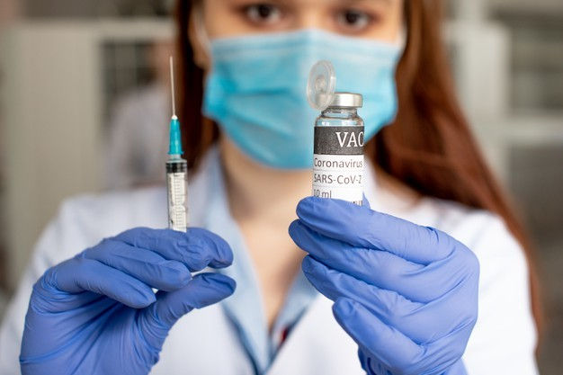

Vacunación no provoca trombosis, dicen científicos

Santo Domingo.- La Sociedad Internacional de Trombosis y Hemostasia recomendó que todos los adultos con indicación deben vacunarse sin temor a sufrir trombosis posterior a la aplicación.
La entidad asegura que eventos reportados de trombosis tras la vacunación en algunos países no son indicadores de que la vacuna contra el virus esté causando eventos de trombosis.
Precisó que rigurosos ensayos clínicos de las vacunas contra covid-19 no identificaron un mayor riesgo de trombosis, evento que produce anualmente 18 mil accidentes cerebrovasculares o ACV en República Dominicana, según estadísticas de la Sociedad Dominicana de Neurología y Neurocirugía.
Le puede interesar:
AstraZeneca defiende seguridad de su vacuna
'Hasta el momento, el pequeño número de casos de trombosis reportados en relación con las millones de vacunas administradas no sugieren un vínculo directo entre ambos.Los episodios trombóticos son frecuentes en la población general y no se han asociado previamente con vacuna alguna', precisó.
En un comunicado publicado en el portal www.infobae.com, la entidad señala que 'actualmente, no sabes si los coágulos de sangre presentados en las personas poco tiempo después de la vacunación es una coincidencia o si la aplicación de la dosis podría, en casos particulares, aumentar el riesgo de desarrollar trombosis'.
Le puede interesar:
OMS recomienda continuar vacunación con AstraZeneca
La trombosis venosa profunda o TVP es un coágulo sanguíneo que se forma en una vena profunda en el cuerpo, generalmente en las zonas de las piernas o los muslos.Si esos trombos se desplazan por el organismo puede producir daños y hasta la muerte.
La trombosis es causa preocupante de inhabilitación y muertes de quienes lo padecen.
Por Pedro Angel
Posted On: 2021-03-18T00:00:00
Content Date: 2021-03-18
Download Date: 2021-09-16
Document ID: L0C04G7RR